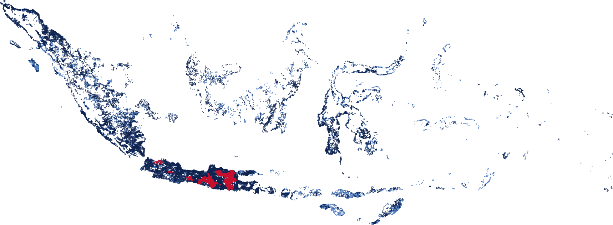
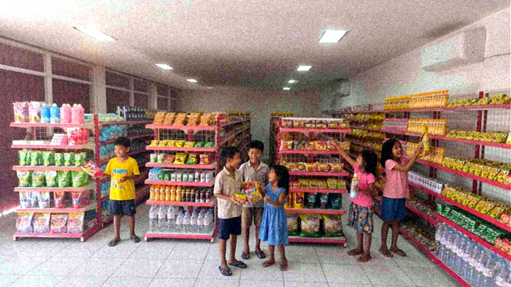

Tim APP KDKMP · Direktorat Pengawasan Bidang Pemberdayaan Ekonomi Masyarakat · BPKP
Mengawal 83.382 Koperasi Desa/Kelurahan Merah Putih, dari lahan sampai gerai beroperasi.
Portal, aplikasi data, peta, dan instrumen lapangan yang kami bangun untuk pengawasan KDKMP. Semua titik masuk untuk Perwakilan dan Pusat ada di halaman ini, triwulan demi triwulan.
Perjalanan KDKMP yang kami awasi
6 Okt 2026Peta sebaran
36.369 gerai tercatat di Portal KDKMP, dari Aceh sampai Papua
Setiap titik adalah satu gerai pada lahan yang sudah terpetakan. Warna menunjukkan kondisinya per 6 Oktober 2026.

- 26.528Terbangun 100%, belum beroperasi
- 8.008Sedang dibangun
- 1.075Sudah beroperasi
- 758Belum melapor progres
Sedang berjalan
Pengawasan pembangunan gedung KDKMP, Triwulan IV 2026
Portal Pengawasan TW IV
Satu pintu untuk panduan teknis, format dan unggah kertas kerja, rekaman diseminasi, monitoring, laporan evaluasi, serta aplikasi data.
Lokus Uji Petik KDKMP
Satu kab/kota lokus per Perwakilan dengan maksimal 10 lokasi, ditambah usulan perubahan lokasi yang disetujui D302.
Populasi KDKMP (BNBA)
Rekap wilayah dari provinsi sampai desa, dengan daftar per nama gerai, mandek, beroperasi, dan belum punya lahan.
Monitoring TW IV
Isian status penugasan, laporan, dan SHP setiap Perwakilan dalam satu sheet bersama.
Mindmap Titik Kritis
Proses bisnis, sub probis, hipotesis, dan risiko KDKMP sebagai dasar analisis titik kritis APP TW IV.
Katalog
Semua aplikasi Tim APP KDKMP
Ada 19 aplikasi yang kami bangun sejak awal 2026, dari peta sebaran gerai sampai portal pengawasan per triwulan.
Tidak ada aplikasi yang cocok. Coba kata lain atau pilih
Linimasa 2026
Dibangun mengikuti siklus pengawasan triwulanan
Setiap triwulan membawa kebutuhan baru di lapangan. Aplikasi dikelompokkan menurut triwulan saat pertama kali dibuat.

Mengapa kami mengawasi
Di balik setiap titik ada gerai yang melayani warga desa
- Pembangunan sesuai rencanaMemastikan pembangunan fisik gerai, pergudangan, dan kelengkapan KDKMP berjalan sesuai perencanaan.
- Beroperasi sesuai tujuanMemastikan KDKMP beroperasi sesuai tujuannya, selaras dengan Peraturan Presiden tentang tata kelola KDKMP.
Cara kerja
Prinsip yang kami pegang saat membangun
Bersumber dari data resmi
Angka diambil dari Portal KDKMP, SIMKOPDES, dan master kode desa Kemendagri, lalu dicocokkan per kode desa sebelum dipakai.
Data per nama hanya untuk BPKP
Halamannya boleh publik, tetapi daftar by name by address hanya terbuka untuk akun Google @bpkp.go.id.
Sesuai wilayah kerja Perwakilan
Setiap Perwakilan melihat data wilayahnya sendiri, mengikuti pembagian dalam Peraturan BPKP Nomor 5 Tahun 2026.
Ringan dan cepat dipakai
Kebanyakan aplikasi berupa halaman statis di GitHub Pages: dibuka dari tautan, tanpa instalasi, dan bisa dipakai dari HP di lapangan.